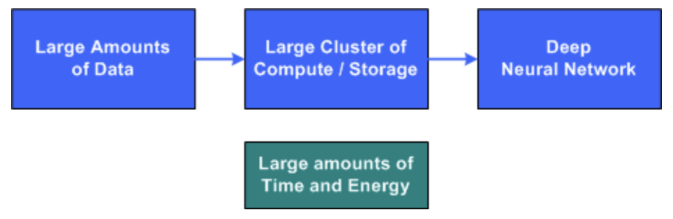
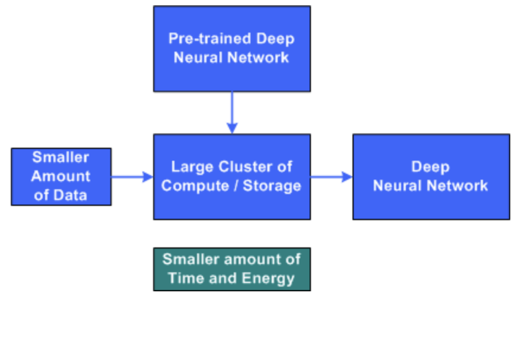
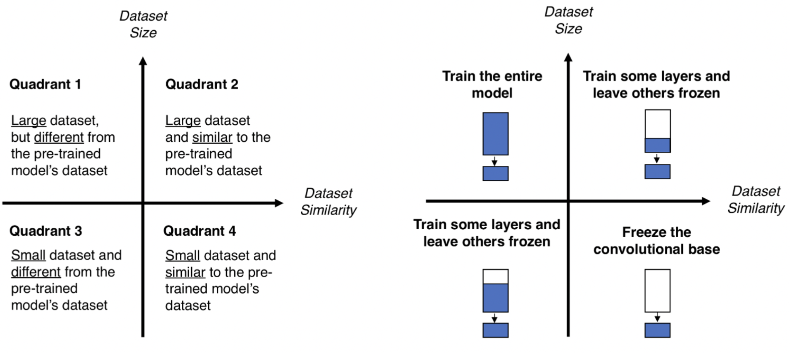
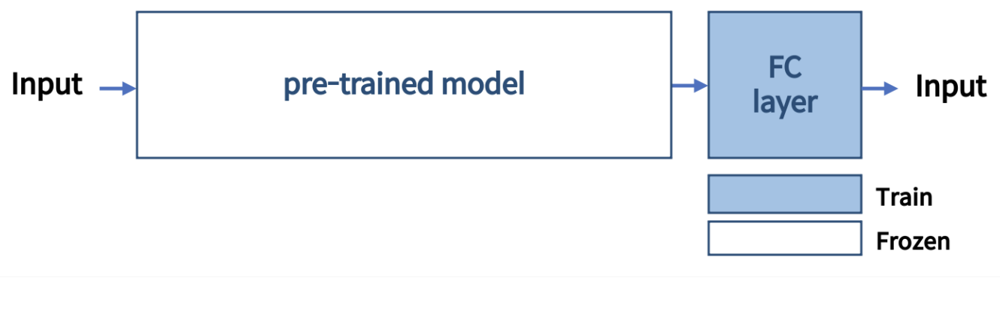
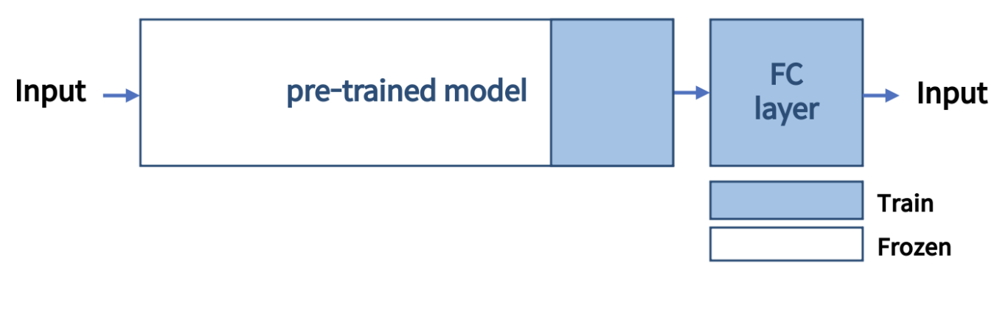
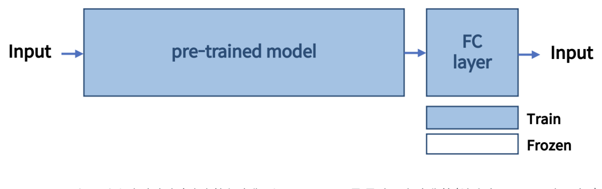

전이학습이란 어떤 문제에서 학습된 모델을 유사하지만 다른 문제에 적용하는 학습 방법이다.
현재 Computer Vision, NLP 등 다양한 분야에서 SOTA를 달성한 모델들의 기반이 되며 기계학습 분야에서 주류로 떠오르는 중이다.
“지도학습 이후로 전이학습이 머신러닝에서 대세가 될 것이다.” - Andrew Ng(Prof. Stanford Uni) -
일반적으로 DNN은 컴퓨팅 서버의 대규모 클러스터, 많은 양의 훈련 데이터 및 심층 신경망을 훈련하는 데 많은 시간이 필요하다.

전이학습의 기본 아이디어는 유사한 문제의 훈련에서 사전 초기화된 DNN으로 시작하는 것이다. 이 네트워크를 사용하면, 유사한 새로운 문제를 훈련할 때, 더 짧은 시간에 학습을 마칠 수 있다.

이때 대량의 데이터를 훈련시킨 사전 학습 모델을 사용하는데, 이를 pre-trained model (Backbone) 이라고 부름. 처음부터 학습 과정을 시작하는 대신, 다른 task를 풀 때 이미 학습 된 패턴으로부터 시작할 수 있다.
Vision
Computer Vision 분야에서 특히 높은 성능을 보이고 있는 이유는 네트워크가 다양한 이미지의 보편적인 feature들을 학습했기 때문이다. 네트워크가 깊어질수록 서로 다른 종류의 feature들을 학습하는데, low-feature 에서 high-feature 로 갈수록 심화된 객체의 패턴이나 형태를 학습한다. 2012년에 발표된 AlexNet 이후 주요 CNN의 base들은 대부분 전이학습을 기반으로 한다.
Computer Vision에서의 전이학습은 labeling 된 source data 와 source task (이전에 언급한 pre-trained 라고 할 수 있겠다), 그리고 현재 새롭게 적용하고자 하는 새로운 target data와 target task 4가지를 동시에 고려해야 하며, 조건에 따라 학습 전략이 다르다.

-
Case 1. Small dataset and similar to the pre-trained model’s dataset
- pre-trained model 을 포함한 전체 네트워크를 학습시키면, overfitting 위험이 있으므로 하지 않는다.
- pre-trained model 은 freeze, pre-trained model + FC layer 해당 FC later 만 학습

-
Case 2. Small dataset and different from the pre-trained model’s dataset
- 마지막 FC layer 만 학습 시키는 것은 좋지 않을 수 있으므로 pre-trained model 일부를 포함해서, 이후 layer 들을 모두 학습

- 마지막 FC layer 만 학습 시키는 것은 좋지 않을 수 있으므로 pre-trained model 일부를 포함해서, 이후 layer 들을 모두 학습
-
Case 3. Large dataset and similar to the pre-trained model’s dataset
- 새로 학습시킬 data가 많다 -> overfitting 위험이 낮다
- pre-trained model 을 포함해서 전체를 다 학습시키거나 일부만 학습시키는 등 다양한 방법 적용 가능
-
Case 4. Large dataset and different from the pre-trained model’s dataset
- 새로 학습시킬 data가 많다 -> overfitting 위험이 낮다 즉, pre-trained model 을 포함한 전체 네트워크를 학습

- 새로 학습시킬 data가 많다 -> overfitting 위험이 낮다 즉, pre-trained model 을 포함한 전체 네트워크를 학습
Transfer Learning VS Fine Tuning
- Transfer Learning
- input에 가까운 parameter 일 수록 변화시키지 않고, 사용하는 방식
- pre-trained model에 변경 또는 추가한 최종 output의 parameter를 small dataset 으로 학습
- Fine Tuning
- 이미 학습된 model에 변경 또는 일부 layer를 추가하여 전체 네트워크를 구성한 후, 직접 준비한 데이터로 전체 네트워크의 모든 parameter를 재학습하는 방식
Performance
2018년에 FAIR(Facebook AI Research)에서 발표한 Rethinking ImageNet Pre-training 에서 실험을 통해 전이학습이 학습 속도를 개선하는데에 큰 효과가 있음을 보여줌.
동일한 조건으로 ‘train from the scratch’가 pre-trained model을 사용한 것 보다 2~3배 정도의 시간이 더 소요된다는 것을 알 수 있다.
NLP
대부분의 NLP 에서는 pre-trained model로 Masked Language Model(MLM) 과 Next Sentence Prediction(NSP)을 sub task로 학습한 BERT를 사용하고 있다. BERT는 단어 중 일부를 Mask Token으로 변환한 뒤, 그것을 예측하는 MLM task와 두 문장을 이어 붙여 이것이 원래 이어져 있는 문장인지 판별하는 NSP task가 있는데, 이 두가지 sub task 만으로도 BERT model은 여러 task에서 fine tuning할 때 효과적으로 작용한다.
다양한 domain에서 사전 학습된 BERT model을 fine tuning하고 있다.
Comments